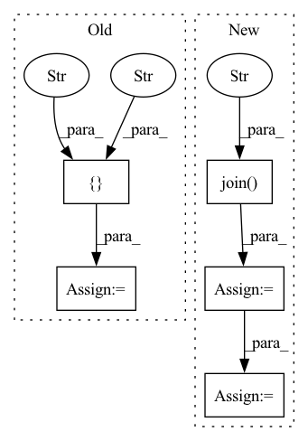

Pattern ID :21702
Before Change
this_dir = os.path.dirname(os.path.abspath(__file__))
extensions_dir = os.path.join(this_dir, "DCLS/src")
ext_list = [ "dcls_1d",
"dcls_2_1d" ,
"dcls_2d",
"dcls_3_1d" ,
"dcls_3_2d",
"dcls_3d",
"dcls",
"im2col_dcls" = list([
extension(
ext_name,
glob.glob(os.path.join(extensions_dir, ext_name + ".cpp")) + glob.glob(os.path.join(extensions_dir, "cuda", ext_name + "_cuda_kernel.cu")),After Change
else:
print("Install With CUDA Extension")
this_dir = os.path.dirname(os.path.abspath(__file__))
extensions_dir_construct = os.path.join( this_dir, "DCLS/construct/src" )
extensions_dir = os.path.join(this_dir, "DCLS/src")
ext_list_construct = ["dcls_construct_1d",
"dcls_construct_2_1d",
"dcls_construct_2d",
"dcls_construct_3_1d",
"dcls_construct_3_2d",
"dcls_construct_3d"]
ext_list = ["dcls_2d",
"im2col_dcls_2d"]
if not sys.platform == "win32":
// win32 does not support cuSparse
ext_list_construct.extend(["spmm",
"sparse_weight_conv"])
extra_compile_args = {"cxx": ["-g"], "nvcc": ["-use_fast_math"]}
extension = CUDAExtension
define_macros = [("WITH_CUDA", None)]
ext_modules = list([
extension(
ext_name,
glob.glob(os.path.join(extensions_dir_construct, ext_name + ".cpp")) + glob.glob(os.path.join(extensions_dir_construct, "cuda", ext_name + "_cuda_kernel.cu")),In pattern: SUPERPATTERN
Frequency: 4
Non-data size: 5
Instances Fragment ID: 69321249
Project Name: k-h-ismail/dilated-convolution-with-learnable-spacings-pytorch
Commit Name: 1c44ddb48f45ba7aff9c9bbd3a31ca15b0b0aa6c
Time: 2021-10-12
Author: khalfaoui.ismail@hotmail.com
File Name: setup.py
M Class Name: AnonimousClass
N Class Name: AnonimousClass
M Method Name: get_extensions(0)
N Method Name: get_extensions(0)
M Parent Class:
N Parent Class:
M File Name: setup.py
N File Name: setup.py
M Start Line: 24
M End Line: 48
N Start Line: 21
N End Line: 58
Before Change
if use_onnx:
if use_cuda:
providers = [
"CUDAExecutionProvider" ,
"CPUExecutionProvider"
]
else:
providers = ["CPUExecutionProvider"]
After Change
self.use_onnx = use_onnx
self.device = "cuda" if use_cuda else "cpu"
if weights == None:
weights = os.path.join("weights" , "yolov5n.pt")
if cfg == None:
cfg = os.path.join("cfg", "yolor_p6.cfg")
//If incase weighst is a list of paths then select path at first index
weights = str(weights[0] if isinstance(weights, list) else weights)
// Load Model
self.model = self.load_model(use_cuda, weights, cfg=cfg, img_size=640)
Fragment ID: 69321376
Project Name: augmentedstartups/as-one
Commit Name: 79f3ea97d63f873008f3ad548f1428f07f4d9dae
Time: 2022-09-07
Author: ajmair.kashif@axcelerate.ai
File Name: asone-linux/code/asone/detectors/yolor/yolor_detector.py
M Class Name: YOLOrDetector
N Class Name: YOLOrDetector
M Method Name: __init__(5)
N Method Name: __init__(4)
M Parent Class:
N Parent Class:
M File Name: asone-linux/code/asone/detectors/yolor/yolor_detector.py
N File Name: asone-linux/code/asone/detectors/yolor/yolor_detector.py
M Start Line: 15
M End Line: 24
N Start Line: 16
N End Line: 28
Before Change
cache_dir = os.path.join(root, "datasets", "IMDB")
column_names = ["text" , "label" ]
mode_list = []
datasets_list = []
cache_file(After Change
else:
raise ValueError(""split" only support str, tuple and list type.")
extract_path = os.path.join( cache_dir, "aclImdb" )
if not os.path.exists(extract_path):
with tarfile.open(os.path.join(cache_dir, "aclImdb_v1.tar.gz"),"r") as tarf:
tarf.extractall(cache_dir)
for mode in mode_list:
datasets_list += (IMDBDataset(extract_path, mode, shuffle=shuffle),)
if len(mode_list) == 1:
return datasets_list[0] Fragment ID: 69321293
Project Name: mindlab-ai/mindnlp
Commit Name: 0728dd21ec19d46df64d9d865be99a22efed329c
Time: 2023-03-22
Author: lvyufeng@cqu.edu.cn
File Name: mindnlp/dataset/text_classification/imdb.py
M Class Name: AnonimousClass
N Class Name: AnonimousClass
M Method Name: IMDB(4)
N Method Name: IMDB(4)
M Parent Class:
N Parent Class:
M File Name: mindnlp/dataset/text_classification/imdb.py
N File Name: mindnlp/dataset/text_classification/imdb.py
M Start Line: 102
M End Line: 122
N Start Line: 66
N End Line: 91
Before Change
if use_onnx:
if use_cuda:
providers = [
"CUDAExecutionProvider" ,
"CPUExecutionProvider"
]
else:
providers = ["CPUExecutionProvider"]
After Change
self.use_onnx = use_onnx
self.device = "cuda" if use_cuda else "cpu"
if weights is None:
weights = os.path.join( "weights", "yolov5n.pt" )
if model_name is None:
model_name = "yolox-s"
if exp_file is None:
exp_file = os.path.join("exps", "default", "yolox_s.py")
// Load Model
if self.use_onnx:
self.model = self.load_onnx_model(use_cuda, weights)
else:
self.model = self.load_torch_model(weights, exp_file, model_name)
def load_onnx_model(self, use_cuda, weights): Fragment ID: 69321260
Project Name: augmentedstartups/as-one
Commit Name: d10df000daa742a49e93689aae9972f7b3f68dc0
Time: 2022-09-09
Author: ajmair.kashif@axcelerate.ai
File Name: asone-linux/code/asone/detectors/yolox/yolox_detector.py
M Class Name: YOLOxDetector
N Class Name: YOLOxDetector
M Method Name: __init__(6)
N Method Name: __init__(4)
M Parent Class:
N Parent Class:
M File Name: asone-linux/code/asone/detectors/yolox/yolox_detector.py
N File Name: asone-linux/code/asone/detectors/yolox/yolox_detector.py
M Start Line: 14
M End Line: 25
N Start Line: 19
N End Line: 43